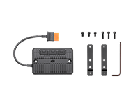

1.000 W de potência de saída estável de alta capacidade de verdade[1]
Atende aos requisitos de energia de eletrodomésticos comuns.
Duas portas USB-C de 100 W,[2] carregamento super-rápido
Dois smartphones carregados simultaneamente até 50% em 15 minutos.[3]
25 dB — Durma com tranquilidade em casa ou ao acampar
É mais silenciosa do que a maioria dos ventiladores e outros aparelhos de uso diário.
Suporta carregamento solar[4]
Carrega drones DJI rapidamente[4]
Carregamento super-rápido DJI Power SDC.
Segurança integrada
Célula de bateria LFP, 4.000 ciclos.[5]
Carregamento completo em 70 min.[6]
Suporta câmeras e smartphones[2]
Até 5 anos de garantia[7]
1.000 W de potência de saída estável de alta capacidade de verdade
A compacta e portátil DJI Power 500 tem uma capacidade de bateria de 512 Wh para fornecer uma potência de saída máxima de 1.000 W.[1] É capaz de alimentar aparelhos de alta potência, como chaleiras elétricas (900 W), e pode carregar um computador e um smartphone simultaneamente, fornecendo energia estável até que a bateria se esgote.[8]
Capacidade de carregamento de 512 Wh
Geladeira de carro aprox.
9,7 horasSmartphone aprox.
28 vezesProjetor aprox.
4,7 horasLuz de acampamento aprox.
16 vezesVentilador elétrico aprox.
4,7 horas*Medidas obtidas em condições laboratoriais a 25 °C , usando a DJI Power 500 para carregar produtos de marcas específicas. Os dados são apenas para referência. A experiência real de uso pode variar.
Carrega drones DJI rapidamente
Com a ajuda de cabos de carregamento vendidos separadamente, você pode carregar rapidamente baterias de drones DJI selecionados com a função de carga super-rápida DJI Power SDC[5] e colocar o drone no ar em aproximadamente 30 minutos. Com três baterias de drone e uma estação de energia portátil DJI, você pode desfrutar de um dia inteiro de voo e criação sem preocupações.
Bateria de Voo Inteligente (Série DJI Mavic 3)[9] Aprox.
32 min.Nível da bateria de 10% a 95%
Bateria de Voo Inteligente (Série DJI Air 3) Aprox.
30 min.Nível da bateria de 10% a 95%
Bateria de Voo Inteligente TB51 (DJI Inspire 3) Aprox.
28 min.Nível da bateria de 10% a 95%
Bateria de Voo Inteligente TB30 (Matrice 30) Aprox.
32 min.Nível da bateria de 10% a 95%
Opções versáteis de recarga
A DJI Power 500 pode ser recarregada de quatro maneiras: carregamento na rede elétrica, carregamento USB-C, carregamento solar e carregamento em veículos. Seja em ambientes internos ou na estrada, você pode escolher de forma flexível o método de recarga que funciona para você.
Carregamento na rede elétrica
É rápido e fácil de conectar, recarregar e seguir em frente. Quando conectada à rede elétrica, a DJI Power 500 suporta tanto o modo de carregamento rápido de 540 W[10] quanto o modo de carregamento padrão de 270 W, com o tempo de recarga mais rápido sendo de 70 minutos para 100% da bateria. Ele também pode carregar até 80% em apenas 50 minutos.[6]
Carregamento USB-C
A DJI Power 500 pode ser recarregada por meio de duas portas USB-C de 100 W,[2] para um total de 200 W de potência de entrada, e pode ser totalmente carregada em aproximadamente três horas.[6]
***Recomenda-se usar painéis solares da marca Zignes, certificada pela DJI. A DJI Power 500 suporta uma entrada máxima de energia solar de 300 W e pode ser totalmente recarregada por energia solar em aproximadamente 1,8 à 4 horas.[12]
Carregamento solar
A DJI Power 500 pode ser conectada a painéis solares, por meio do Módulo Adaptador do Painel Solar (MPPT) DJI Power ou da tomada elétrica veicular da DJI Power para cabo de alimentação SDC,[11] e recarregada com energia solar ecologicamente correta. O MPPT (Módulo Adaptador do Painel Solar) é um algoritmo inteligente que suporta o monitoramento em tempo real da tensão gerada por painéis solares conectados. Ao rastrear e manter os valores mais altos de tensão e corrente (V-I), o algoritmo permite que os painéis solares recarreguem a DJI Power 500 de maneira otimizada e eficiente.
Carregamento em veículos
Supercarregue facilmente em qualquer viagem de carro. Com a tomada elétrica veícular da DJI Power para cabo de alimentação SDC (12 V/24 V), você pode recarregar a DJI Power 500 via carregador veicular para uma unidade totalmente recarregada em apenas seis horas.[6]
Segurança e proteção
A segurança vem em primeiro lugar sempre. Desde a estrutura do corpo e a química das células até o software do sistema, a DJI Power 500 tem um design de segurança abrangente. Ela foi aprovada em 26 certificações de teste de produto da SGS, a autoridade suíça de testes terceirizados, garantindo um uso elétrico sem preocupações.
Certificação da autoridade SGS Switzerland
Graças ao seu design de segurança abrangente, a DJI Power 500 obteve a certificação de estação de energia portátil de alta qualidade da SGS Switzerland e recebeu 26 certificações de testes de produto, incluindo 2 testes de verificação do produto, 4 testes de desempenho mecânico, 9 testes de desempenho elétrico, 3 testes de resistência ambiental, 5 testes de nível de ruído e 3 testes de fornecimento e recarga de energia CC inteligente e eficiente.
Sistema de Gerenciamento de Bateria Inteligente (BMS)
Quando o limite de segurança do uso de eletricidade é ultrapassado, o mecanismo de proteção para fornecimento e recarga de energia é ativado automaticamente. E quando o fornecimento de eletricidade volta ao normal, a DJI Power 500 retoma a operação.
Célula LFP
A célula LFP é segura e durável e pode alcançar 4.000 ciclos,[5] proporcionando uma vida útil de aproximadamente 10 anos, mesmo com uso frequente.[13]
Uso seguro e confiável de energia
11 sensores de temperatura
11 sensores de temperatura no dispositivo monitoram continuamente a dissipação de calor e a estação de energia pode funcionar normalmente mesmo em temperaturas de até 40 ºC.[14]
Proteção contra queda de energia
Dez fusíveis localizados por toda a estação de energia fornecem proteção de circuito para cada módulo. Mesmo que haja uma anomalia no circuito, a DJI Power 500 responderá de forma rápida e segura.
Modo UPS, continuidade de energia sem interrupções
Se um dispositivo elétrico estiver conectado a uma DJI Power 500 ligada (via porta de saída CA) e ambos estiverem recebendo energia da rede elétrica, a DJI Power 500 entra no modo UPS (fonte de alimentação ininterrupta) por padrão. Em casos de queda repentina de energia, a DJI Power 500 pode começar a alimentar o dispositivo conectado (ou dispositivos) em 0,02 segundo[14], garantindo operação contínua.
25 dB – Durma com tranquilidade em casa ou ao acampar
O nível de ruído da DJI Power 500 é tão baixo quanto 25 dB durante o recarregamento, mais baixo do que a maioria dos refrigeradores domésticos, portanto, não há perturbação sonora, mesmo em ambientes silenciosos. É mais silenciosa do que a maioria dos ventiladores e outros aparelhos de uso diário.
Várias portas, aplicações ampliadas
Duas portas USB-C de 100 W, carregamento super-rápido
Duas portas USB-C de duas vias de 100 W suportam entrada e saída de energia[2] e ambas as direções suportam o protocolo de carregamento rápido PD 3.0, permitindo saída e entrada eficientes. As duas portas podem ser usadas simultaneamente para recarregar a DJI Power 500 a um máximo de 200 W ou fornecer energia para dispositivos como câmeras, smartphones e notebooks até 200 W.[2]
Vários acessórios
A DJI Power 500 possui duas portas USB-C de duas vias, duas portas de saída CA, duas portas USB-A e uma porta SDC Lite. É altamente versátil para tornar o uso de energia em diversos cenários mais convenientes. Pode ser conectada a diferentes tipos de painéis solares, cabos de energia e cabos adaptadores, atendendo às necessidades de uma variedade de opções de fornecimento e recarga de energia.
Módulo Adaptador do Painel Solar (MPPT) DJI Power
Tomada elétrica veicular da DJI Power para cabo de alimentação SDC (12 V/24 V)
Cabo de carregamento rápido DJI Power SDC (Série DJI Mavic 3)
Painel Solar Zignes 120 W
Cabo de carregamento rápido DJI Power SDC (Série Matrice 30)
Cabo de carregamento rápido DJI Power SDC (DJI Inspire 3)
Cabo de alimentação DJI Power SDC (12 V) para tomada veicular
Cabo de carregamento rápido DJI Power SDC (Série DJI Air 3)
Cabo de alimentação DJI Power SDC para XT60 (12 V)
Painel solar dobrável IBCPOWER 200 W
Painel solar flexível LINKSOLAR 200 W
Cabo de carregamento solar MC4 para XT60 (DJI Power)
A DJI tem um canal oficial para a compra dos produtos no Brasil
Comprando na Loja Oficial DJI Brasil, você tem a segurança de receber um produto original, regulamentado, certificado pelas agências nacionais competentes e ainda fica 100% protegido pela nossa garantia e assistência.
ATENÇÃO: não nos responsabilizamos por produtos adquiridos em outros canais que não os oficiais.

- Disponível quando o nível de bateria do produto estiver acima de 20%.
- Uma única porta USB-C suporta uma potência de saída máxima de 100 W. Durante a saída de energia, tanto o dispositivo sendo carregado quanto o cabo devem suportar o protocolo PD 3.0. Durante a entrada de energia (recarregamento da estação de energia), tanto o carregador quanto o cabo devem suportar o protocolo PD 3.0.
- Em uma temperatura ambiente de 25 °C, carregando dois smartphones com capacidades de bateria de aproximadamente 17 Wh cada. O tempo mínimo para carregar de 0% a 50% é de 15 minutos usando o protocolo de carregamento rápido PD e com uma potência de carregamento de aproximadamente 34 W. O tempo de carregamento pode variar devido a fatores como temperatura, modelo do dispositivo, capacidade da bateria e compatibilidade do dispositivo. Consulte a experiência real de uso. Dados medidos em um laboratório da DJI.
- Requer certos acessórios que são vendidos separadamente.
- Medidas obtidas em condições laboratoriais a 25 °C, sendo carregada no modo de carregamento padrão de 270 W com potência de saída de 500 W.
- Testes realizados em condições de laboratório a 25 °C e os dados devem ser usados apenas como referência.
- Unidades DJI Power 500 compradas na Loja DJI terão uma garantia de três anos, que pode ser estendida por mais dois anos após o registro. Consulte o serviço de atendimento ao cliente na Loja DJI para mais detalhes.
- Ao carregar vários dispositivos simultaneamente, se a potência total de saída não exceder 1.100 W, a Power 500 poderá alimentar os dispositivos de forma estável até que a bateria se esgote. Se a potência de saída total exceder 1.100 W, a Power 500 desligará a saída CA após 30 segundos.
- Suporta as Séries DJI Mavic 3 Pro, Mavic 3 Classic, Mavic 3 e Mavic 3 Enterprise.
- Para atingir a potência máxima de recarga da rede de 540 W, o nível da bateria da estação de energia deve ser de pelo menos 60%, e a temperatura ambiente deve estar entre 20° a 35° C.
- A DJI Power 500 pode se conectar a um Módulo Adaptador do Painel Solar (MPPT) DJI Power, que pode se conectar a até três painéis solares. A DJI Power 500 também pode se conectar a um painel solar por meio da tomada elétrica veicular da DJI Power para cabo de alimentação SDC.
- Requer o Módulo Adaptador do Painel Solar (MPPT) DJI Power e painéis solares, que são vendidos separadamente. O tempo mínimo para recarga completa foi medido em condições laboratoriais a 25 °C e é apenas para referência. O tempo real de recarga está sujeito a fatores como o ângulo da luz solar e a intensidade da luz. A experiência real de uso pode variar.
- Com base no uso correto do produto, a DJI Power 500 terá uma vida útil aproximada de 10 anos, calculada com base na conclusão de um ciclo completo de recarga/descarga diariamente. Valores apenas para referência. A experiência real de uso pode variar.
- Dados medidos em um laboratório da DJI.